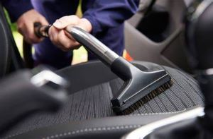
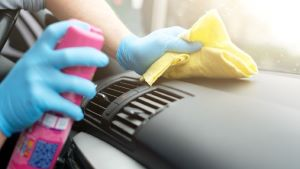
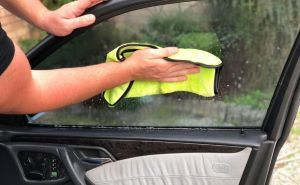

What Should Be Included?
A person should look for three specific things when getting their vehicle's interior detailed. First is a quality vaccum. This can easily be overlooked and if a detailer spends 5 extra minutes on one section they can make a world of a difference. The next thing they should look for is a quality scrub and wipedown of all panels, seats, and components. This is typically done with a car specific interior cleaner, various brushes, and a microfiber towel. The last thing a person should look for when getting an interior detail, is a quality glass cleaning. This is known to be a detailers achilles heel, as it is extremely difficult to properly clean the windown and achieve a streak-free finish.
Vaccum
A quality vaccum is the base of a quality interior detail. It is the part of the interior detail that people notice most, and often the difference between a bad vaccuming job and a good one is nothing short of a few extra minutes.
Panel Wipedown
This part is extremely important as this step will clean the surfaces that dirt has built up on, and sanitize the surfaces that one typically touches nearly every single time they are in their vehicle such as the steering wheel, the gear shifter, turn signals, even the seats. This can also remove light surface mold, however it is recommended that you speak with your detailer about deeper cleanings to ensure any mold is truly removed.
Windows
Windows are reguarded as a detailers achilles heel as to ensure the window is truly clean and streak-free, you must look at the window at different angles and in different lighting. It is also important to keep in mind the chemical makeup of the products that are used on windows, because car Windows require a specific ammonia-free cleaner dedicated to cars. This is because other cleaners can be harmful to the glass, more specifically if you have any film such as tint on the windows it can damage the film.